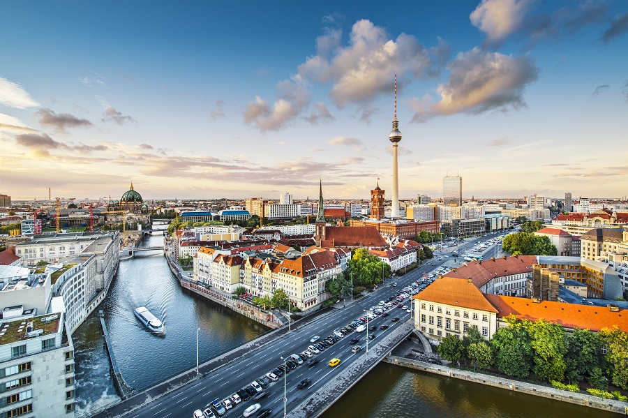
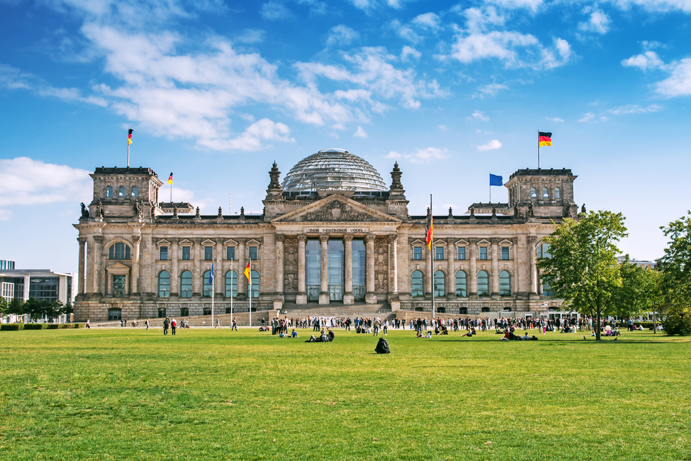

| Strona główna | Historia | Historyczne miejsca | Kuchnia | Fakty |
Berlin

Berlin to miasto o bogatym dziedzictwie kulturowym i historycznym. Jego muzea, teatry i galerie są znane na całym świecie. Fenomen Berlina polega na tym, że podoba się on zarówno miłośnikom sztuki klasycznej, jak i zwolennikom awangardy. Poza tym stolica Niemiec jest miastem bardzo tolerancyjnym. Warto tu przyjechać, aby poczuć wyjątkową atmosferę wolności i życzliwości. W Berlinie mieszkają imigranci z różnych stron świata, dlatego przybyszów traktują tu lojalnie. No i oczywiście warto przyjechać do Berlina, aby na własne oczy zobaczyć Reichstag i pozostałości słynnego muru berlińskiego, o którym nakręcono tak wiele filmów i napisano wiele książek.

Berlin nazywany jest miastem wolności i studentów. Prawdopodobnie dlatego jest tu tak wiele hosteli – niedrogie zakwaterowanie ze wspólnymi pokojami i wspólną łazienką. Hostele znajdują się nawet w centrum miasta, co uszczęśliwia budżetowych turystów. Kemping jest również popularny w Berlinie. Są to miasta namiotowe położone na obrzeżach. Można tu mieszkać za grosze, a są one otwarte przez cały rok. Ale nadal lepiej jest osiedlić się tutaj w ciepłym sezonie. Hotele znanych światowych sieci są również reprezentowane w Berlinie. Czekają na swoich gości w okolicach Charlottenburg i Kurfürstendamm. Luksusowe hotele można znaleźć w rejonie Mitte. Najpopularniejszym typem wyżywienia w hotelach jest BB – wyłącznie śniadania. Ceny za pokój są niższe niż w Paryżu i Londynie. Wybierając się jednak na zwiedzanie Berlina, należy mieć na uwadze, że podczas np. Festiwalu Filmowego w Berlinie czy obchodów Bożego Narodzenia ceny znacznie wzrosną.

© Anna Baraban